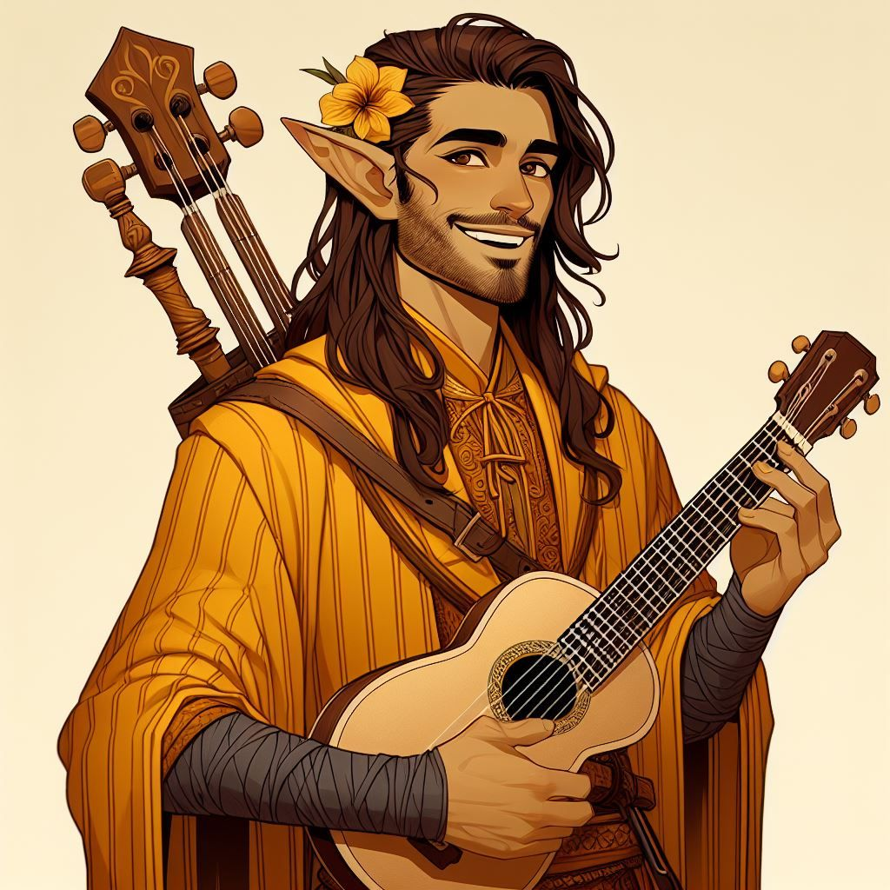

Overview
Name: Allayane Jaquette
Race: Half-Elf
Class: Bard
Alignment: TBD
Background: Folk Hero
Ability Scores
- Strength: 14
- Dexterity: 19
- Constitution: 16
- Intelligence: 13
- Wisdom: 16
- Charisma: 18
Senses
- Passive Perception: 17
- Passive Investigation: 15
- Passive Insight: 13
Backstory
Allayne grew up in a small village where he became known for two things: his music and his remarkable ability to charm absolutely everyone he met. Well... almost everyone.
Allayne would argue that the few exceptions were simply people of questionable taste. From an early age, he discovered that a well-timed smile could open doors, a beautiful song could soften a hard heart, and looking one's best was never a waste of time. He took all three lessons very seriously.
Then, one summer evening, everything changed. A band of raiders descended upon the village of Silverthach.
Most of the villagers fled or barricaded themselves inside their homes. Allayne, who had been enjoying a perfectly pleasant evening and was in no mood whatsoever to become involved in violence, initially decided that discretion was the better part of valor.
Then he heard a child crying. And that changed everything. Allayne stepped out of hiding. He distracted the raiders with music and insults, led them on a ridiculous chase through the village, and used every ounce of charm, wit, and quick thinking he possessed to give the villagers time to escape.
He wasn't the strongest person there. He wasn't the bravest. And, according to Allayne, he certainly wasn't dressed for it. But he stayed. By morning, the raiders were gone, the villagers were safe, and Allayne had somehow become a hero.
The villagers adored him. They told the story for years. Allayne, naturally, considers their admiration completely justified. He does not consider himself conceited. He considers himself appropriately aware of his many excellent qualities.
Special Inventory Items
- Emergency Float Serum
You know...
- Riddick Alexsander
- He is from Witchglass
- Has black striations
- A weird symbol for a necklace
- 'Follow the sigils. Don't trust anyone.'